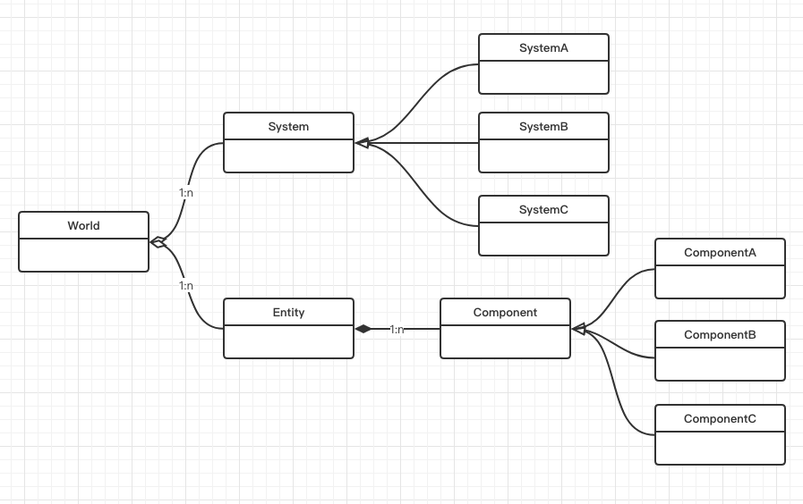

结构
Scene 就是这张图中的 World，用于存放场景中所有的 Entity 以及更新场景中的 System。

Scene
class Scene
{
public:
Scene();
~Scene();
Entity CreateEntity(const std::string& name = std::string());
void DestroyEntity(Entity entity);
void OnUpdate(Timestep ts);
void OnViewportResize(uint32_t width, uint32_t height);
private:
template<typename T>
void OnComponentAdded(Entity entity, T& component);
private:
entt::registry m_Registry;
uint32_t m_ViewportWidth = 0, m_ViewportHeight = 0;
friend class Entity;
friend class SceneSerializer;
friend class SceneHierarchyPanel;
};
序列化和反序列化
对于 Scene 来说最重要的就是存储和读取功能。
class SceneSerializer
{
public:
SceneSerializer(const Ref<Scene>& scene);
void Serialize(const std::string& filepath);
void SerializeRuntime(const std::string& filepath);
bool Deserialize(const std::string& filepath);
bool DeserializeRuntime(const std::string& filepath);
private:
Ref<Scene> m_Scene;
};
这里通过 YAML 实现将场景存入文本文件。
- 定义 YAML 接口。
namespace YAML {
template<>
struct convert<glm::vec3>
{
static Node encode(const glm::vec3& rhs)
{
Node node;
node.push_back(rhs.x);
node.push_back(rhs.y);
node.push_back(rhs.z);
return node;
}
static bool decode(const Node& node, glm::vec3& rhs)
{
if (!node.IsSequence() || node.size() != 3)
return false;
rhs.x = node[0].as<float>();
rhs.y = node[1].as<float>();
rhs.z = node[2].as<float>();
return true;
}
};
template<>
struct convert<glm::vec4>
{
static Node encode(const glm::vec4& rhs)
{
Node node;
node.push_back(rhs.x);
node.push_back(rhs.y);
node.push_back(rhs.z);
node.push_back(rhs.w);
return node;
}
static bool decode(const Node& node, glm::vec4& rhs)
{
if (!node.IsSequence() || node.size() != 4)
return false;
rhs.x = node[0].as<float>();
rhs.y = node[1].as<float>();
rhs.z = node[2].as<float>();
rhs.w = node[3].as<float>();
return true;
}
};
}
- 调用 YAML 接口序列化和反向序列化场景。
namespace Hazel {
YAML::Emitter& operator<<(YAML::Emitter& out, const glm::vec3& v)
{
out << YAML::Flow;
out << YAML::BeginSeq << v.x << v.y << v.z << YAML::EndSeq;
return out;
}
YAML::Emitter& operator<<(YAML::Emitter& out, const glm::vec4& v)
{
out << YAML::Flow;
out << YAML::BeginSeq << v.x << v.y << v.z << v.w << YAML::EndSeq;
return out;
}
SceneSerializer::SceneSerializer(const Ref<Scene>& scene)
: m_Scene(scene)
{
}
static void SerializeEntity(YAML::Emitter& out, Entity entity)
{
out << YAML::BeginMap; // Entity
out << YAML::Key << "Entity" << YAML::Value << "12837192831273"; // TODO: Entity ID goes here
if (entity.HasComponent<TagComponent>())
{
out << YAML::Key << "TagComponent";
out << YAML::BeginMap; // TagComponent
auto& tag = entity.GetComponent<TagComponent>().Tag;
out << YAML::Key << "Tag" << YAML::Value << tag;
out << YAML::EndMap; // TagComponent
}
if (entity.HasComponent<TransformComponent>())
{
out << YAML::Key << "TransformComponent";
out << YAML::BeginMap; // TransformComponent
auto& tc = entity.GetComponent<TransformComponent>();
out << YAML::Key << "Translation" << YAML::Value << tc.Translation;
out << YAML::Key << "Rotation" << YAML::Value << tc.Rotation;
out << YAML::Key << "Scale" << YAML::Value << tc.Scale;
out << YAML::EndMap; // TransformComponent
}
if (entity.HasComponent<CameraComponent>())
{
out << YAML::Key << "CameraComponent";
out << YAML::BeginMap; // CameraComponent
auto& cameraComponent = entity.GetComponent<CameraComponent>();
auto& camera = cameraComponent.Camera;
out << YAML::Key << "Camera" << YAML::Value;
out << YAML::BeginMap; // Camera
out << YAML::Key << "ProjectionType" << YAML::Value << (int)camera.GetProjectionType();
out << YAML::Key << "PerspectiveFOV" << YAML::Value << camera.GetPerspectiveVerticalFOV();
out << YAML::Key << "PerspectiveNear" << YAML::Value << camera.GetPerspectiveNearClip();
out << YAML::Key << "PerspectiveFar" << YAML::Value << camera.GetPerspectiveFarClip();
out << YAML::Key << "OrthographicSize" << YAML::Value << camera.GetOrthographicSize();
out << YAML::Key << "OrthographicNear" << YAML::Value << camera.GetOrthographicNearClip();
out << YAML::Key << "OrthographicFar" << YAML::Value << camera.GetOrthographicFarClip();
out << YAML::EndMap; // Camera
out << YAML::Key << "Primary" << YAML::Value << cameraComponent.Primary;
out << YAML::Key << "FixedAspectRatio" << YAML::Value << cameraComponent.FixedAspectRatio;
out << YAML::EndMap; // CameraComponent
}
if (entity.HasComponent<SpriteRendererComponent>())
{
out << YAML::Key << "SpriteRendererComponent";
out << YAML::BeginMap; // SpriteRendererComponent
auto& spriteRendererComponent = entity.GetComponent<SpriteRendererComponent>();
out << YAML::Key << "Color" << YAML::Value << spriteRendererComponent.Color;
out << YAML::EndMap; // SpriteRendererComponent
}
out << YAML::EndMap; // Entity
}
void SceneSerializer::Serialize(const std::string& filepath)
{
YAML::Emitter out;
out << YAML::BeginMap;
out << YAML::Key << "Scene" << YAML::Value << "Untitled";
out << YAML::Key << "Entities" << YAML::Value << YAML::BeginSeq;
m_Scene->m_Registry.each([&](auto entityID)
{
Entity entity = { entityID, m_Scene.get() };
if (!entity)
return;
SerializeEntity(out, entity);
});
out << YAML::EndSeq;
out << YAML::EndMap;
std::ofstream fout(filepath);
fout << out.c_str();
}
void SceneSerializer::SerializeRuntime(const std::string& filepath)
{
// Not implemented
HZ_CORE_ASSERT(false);
}
bool SceneSerializer::Deserialize(const std::string& filepath)
{
std::ifstream stream(filepath);
std::stringstream strStream;
strStream << stream.rdbuf();
YAML::Node data = YAML::Load(strStream.str());
if (!data["Scene"])
return false;
std::string sceneName = data["Scene"].as<std::string>();
HZ_CORE_TRACE("Deserializing scene '{0}'", sceneName);
auto entities = data["Entities"];
if (entities)
{
for (auto entity : entities)
{
uint64_t uuid = entity["Entity"].as<uint64_t>(); // TODO
std::string name;
auto tagComponent = entity["TagComponent"];
if (tagComponent)
name = tagComponent["Tag"].as<std::string>();
HZ_CORE_TRACE("Deserialized entity with ID = {0}, name = {1}", uuid, name);
Entity deserializedEntity = m_Scene->CreateEntity(name);
auto transformComponent = entity["TransformComponent"];
if (transformComponent)
{
// Entities always have transforms
auto& tc = deserializedEntity.GetComponent<TransformComponent>();
tc.Translation = transformComponent["Translation"].as<glm::vec3>();
tc.Rotation = transformComponent["Rotation"].as<glm::vec3>();
tc.Scale = transformComponent["Scale"].as<glm::vec3>();
}
auto cameraComponent = entity["CameraComponent"];
if (cameraComponent)
{
auto& cc = deserializedEntity.AddComponent<CameraComponent>();
auto& cameraProps = cameraComponent["Camera"];
cc.Camera.SetProjectionType((SceneCamera::ProjectionType)cameraProps["ProjectionType"].as<int>());
cc.Camera.SetPerspectiveVerticalFOV(cameraProps["PerspectiveFOV"].as<float>());
cc.Camera.SetPerspectiveNearClip(cameraProps["PerspectiveNear"].as<float>());
cc.Camera.SetPerspectiveFarClip(cameraProps["PerspectiveFar"].as<float>());
cc.Camera.SetOrthographicSize(cameraProps["OrthographicSize"].as<float>());
cc.Camera.SetOrthographicNearClip(cameraProps["OrthographicNear"].as<float>());
cc.Camera.SetOrthographicFarClip(cameraProps["OrthographicFar"].as<float>());
cc.Primary = cameraComponent["Primary"].as<bool>();
cc.FixedAspectRatio = cameraComponent["FixedAspectRatio"].as<bool>();
}
auto spriteRendererComponent = entity["SpriteRendererComponent"];
if (spriteRendererComponent)
{
auto& src = deserializedEntity.AddComponent<SpriteRendererComponent>();
src.Color = spriteRendererComponent["Color"].as<glm::vec4>();
}
}
}
return true;
}
bool SceneSerializer::DeserializeRuntime(const std::string& filepath)
{
// Not implemented
HZ_CORE_ASSERT(false);
return false;
}
}